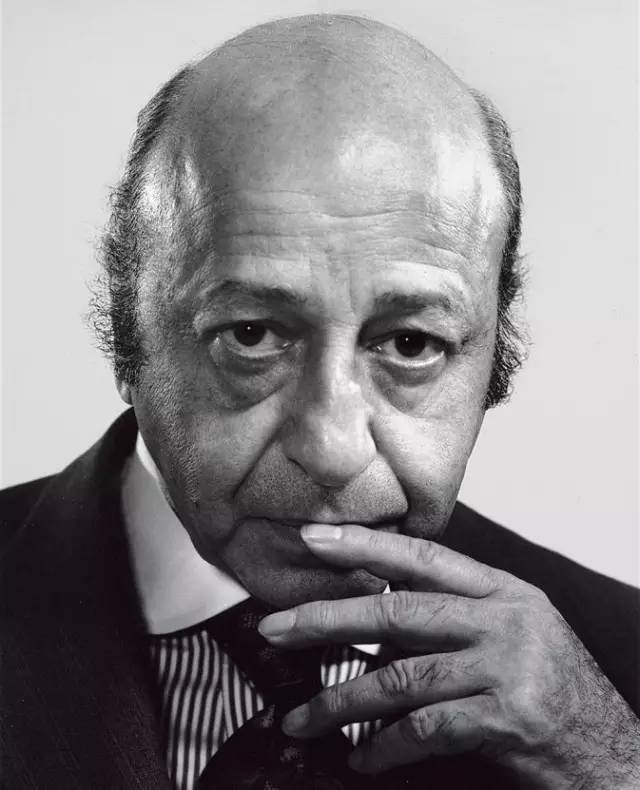

|
尤素福·卡什
尤素福·卡什（Yousuf Karsh） 美籍加拿大人，尤素福·卡什出生于土耳其的阿美尼亚的马尔丁，是一位享誉国际的肖像摄影家。1924年卡什因躲避民族仇杀移居加拿大，随后到美国波士顿学习摄影。 在他的镜头下留下过英国文豪萧伯纳、海明威等名人影像，来渥太华的许多名人也都以能让卡什拍摄一张肖像为荣。目前，西方许多著名的艺术博物馆都设立专柜收藏卡什的摄影作品。 1968年，卡什荣膺加拿大服务勋章，1970年成为伦敦皇家摄影学会名誉会士。他一直担任摄影艺术科学基金会理事，并被加拿大专业摄影家协会命名为摄影艺术大师。1971年，因他对伤残人员的卓越贡献获得了美国总统嘉奖。 |
 |